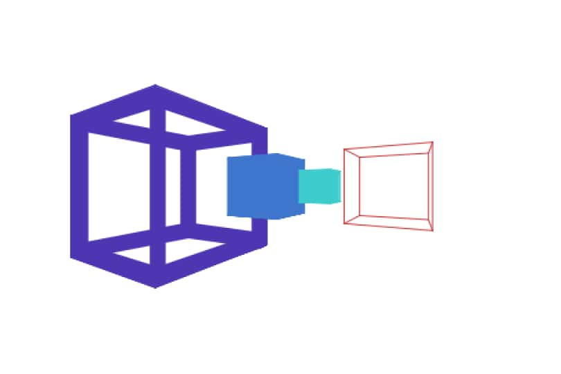

移動・回転が可能な3D

リンク
以下のリンクから実際に作品をプレイすることができます。
SCRATCHで見る TurboWarpで見る使用方法
キーの操作
W・A・S・Dのキーで水平方向に移動、Q・Eキーで上下方向に移動、矢印キーで回転することができます。
3Dの方法
これまで移動のみできる作品や、回転のみできる作品を作ったことはありましたが、初めて移動と回転を両方できる作品を作りました。
描画の方法
自分の周りのオブジェクトが自分の向きとは反対に回転するとみて初めにプレイヤーを中心に三角関数を使い、回転する処理をします。その後に回転後のxyz値を使って2次元に変換しています。